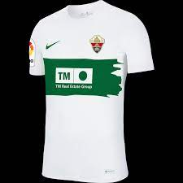

CAMISETA ELCHE

Descripcion
La camiseta Nike Dri-FIT Park cuenta con un suave tejido con capilarización del sudor y con malla en la espalda para que mantengas la frescura y la transpirabilidad.
Tecnología Dri-FIT para mantener la transpirabilidad y la comodidad.
Panel de malla en la espalda para una mayor transpirabilidad.
COMODIDAD PARA COMPETIR.